Instalações Elétricas - Ademaro A. M. B. Cotrim Capítulo 6 - Dispositivos de manobra, proteção, comando e seccionamento não automático
Prof. Dr. Thales A. C. Maia
UFMG - DEE
Generalidades
Dispositivos de baixa e alta tensões
Os dispositivos de manobra (ou de comando) e de proteção podem ser classificados em:
Dispositivos de baixa tensão, quando projetados para emprego em circuitos cuja tensão de linha é inferior ou igual a 1.000 V.
Dispositivos de alta tensão, quando projetados para emprego em circuitos cuja tensão de linha é superior a 1.000 V.
Operação e Classificação
A operação de um dispositivo de manobra é o movimento dos contatos móveis do circuito principal do dispositivo, de uma posição para outra.
Os dispositivos de manobra podem ser também classificados:
De acordo com o meio em que seus contatos fecham e abrem; assim, temos, por exemplo, dispositivos a ar (ou secos), a óleo, a vácuo, a \(SF_6\) etc.
Quanto ao número de pólos, em unipolares, bipolares, tripolares etc.
Disjuntor
Disjuntor é um dispositivo de manobra (mecânico) e de proteção, capaz de estabelecer, conduzir e interromper correntes em condições normais do circuito, assim como estabelecer, conduzir por tempo especificado e interromper correntes em condições anormais especificadas do circuito, tais como as de curto-circuito.
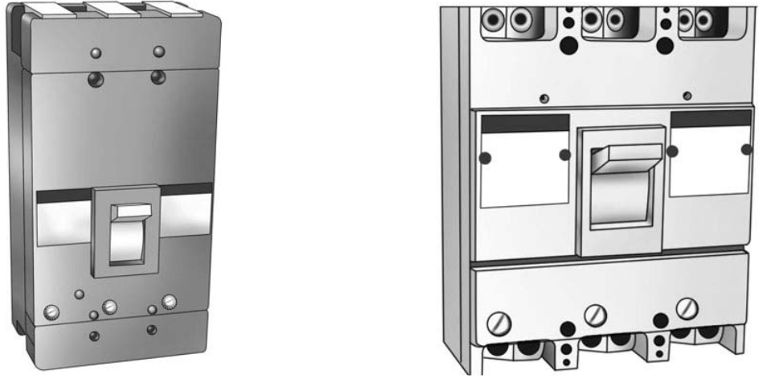
Fig. 1: Disjuntores tripolares.
Dispositivo Fusível
Um dispositivo fusível é um dispositivo de proteção que, pela fusão de uma parte especialmente projetada, abre o circuito no qual se acha inserido e interrompe a corrente, quando esta excede um valor de referência durante um tempo especificado.
As partes de um dispositivo fusível são, em geral:
Fusível: peça substituível após a sua operação e que contém o elemento fusível.
Base: parte fixa do dispositivo, com contatos e terminais.
Indicador: parte do dispositivo que dá uma indicação visível que ele operou.
Percussor: dispositivo mecânico integrante que libera a energia necessária para acionar outros dispositivos.
Porta-fusível: parte móvel de um dispositivo fusível no qual se instala um fusível, mas não inclui este.
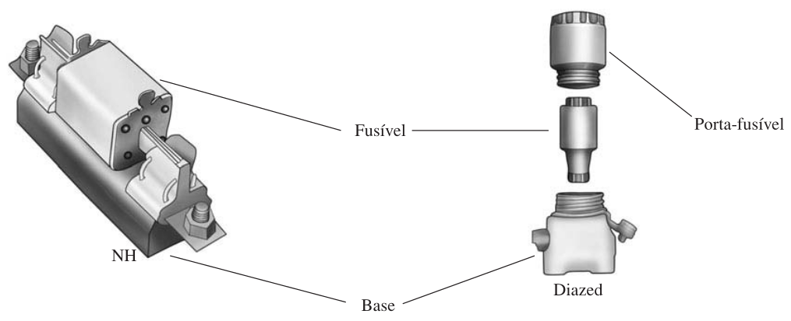
Fig. 2: Dispositivos fusíveis NH e Diazed e respectivas partes componentes.
Chaves e Seccionadores
Chave: dispositivo de manobra que assegura uma distância de isolamento na posição aberta e mantém a continuidade na fechada.
Chave de faca: chave na qual o contato móvel de cada pólo é constituído por uma lâmina articulada que se encaixa no contato fixo correspondente.
Chave eletromagnética: chave na qual a força necessária para o fechamento e a abertura dos contatos principais é feita por um eletroímã.
Chave de partida: conjunto de meios necessários para dar a partida e parar um motor elétrico, associado a uma proteção adequada contra sobrecargas.
Seccionador: dispositivo de manobra que assegura, na posição aberta, uma distância de isolamento que satisfaz os requisitos de segurança.
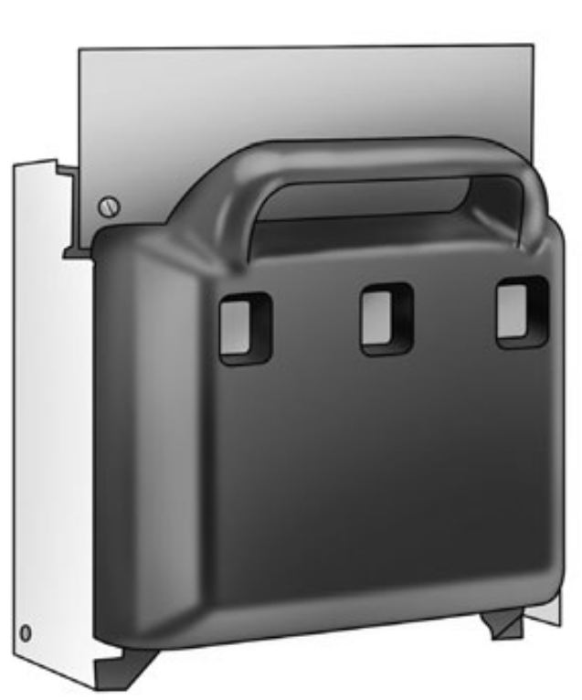
Fig. 3: Chave seccionadora-fusível.
Interruptores, Contatores e Dispositivo DR
Interruptor: chave capaz de estabelecer, conduzir e interromper correntes sob condições normais do circuito e conduzir sob condições anormais.
Interruptor-seccionador: reúne as características de um interruptor e de um seccionador.
Contator: dispositivo de manobra (mecânico) de operação não manual, com uma única posição de repouso.
Dispositivo DR: dispositivo a corrente diferencial-residual, de proteção, que detecta a existência de corrente diferencial em um circuito. Provoca a abertura do circuito quando o valor da corrente ultrapassa um valor preestabelecido.
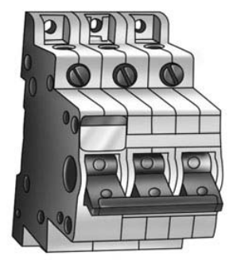
Fig. 4: Interruptor trifásico.
Funções Básicas dos Dispositivos
As quatro funções básicas que podem ser exercidas por um ou mais dispositivos:
Proteção contra choques elétricos: destina-se a proteger as pessoas e os animais contra perigos de contato com massas energizadas (detecção e seccionamento automático).
Proteção contra sobrecorrentes: objetivo de limitar as conseqüências destrutivas das sobrecorrentes e separar o restante da instalação da parte em falta (sobrecarga e curto-circuito).
Comando funcional: permite ao usuário intervir, voluntariamente, em qualquer setor da instalação, ligando/desligando equipamentos.
Seccionamento não automático (manual): destinado a garantir a separação de uma parte da instalação de sua fonte de tensão para trabalhos, consertos e medições com segurança.
Definições de Relés - Parte I
Relé eletromecânico: operação lógica produzida pelo movimento relativo de elementos mecânicos, sob a ação de uma corrente elétrica nos circuitos de entrada.
Relé estático ou eletrônico: operação lógica produzida por componentes eletrônicos, magnéticos, ópticos, sem movimento mecânico.
Relé monoestável: altera seu estado sob ação de uma grandeza de entrada e retorna ao estado anterior após a remoção da grandeza.
Relé biestável: altera seu estado sob ação de uma grandeza e permanece no mesmo estado após a remoção, sendo necessária ação suplementar para reverter.
Definições de Relés - Parte II
Relé de tempo especificado: um ou mais tempos que o caracterizam devem satisfazer requisitos de exatidão especificados.
Relé de tempo não especificado: não se especificam exigências relativas à exatidão de tempo.
Relé de medição: destinado a comutar quando sua grandeza alcança, sob condições exatas, seu valor de operação. Pode ser:
Tempo dependente: o tempo depende do valor da grandeza.
Tempo independente: o tempo é independente do valor da grandeza.
Relé térmico: relé de medição a tempo dependente, que protege equipamentos contra danos térmicos de origem elétrica, simulando o comportamento térmico.
Grandezas características dos dispositivos de proteção e de manobra
Correntes
Corrente nominal (\(I_N\)): valor eficaz da corrente de regime permanente que o dispositivo pode conduzir indefinidamente sem exceder os limites de temperatura.
Valor de crista máximo: valor de crista que se verifica quando o estabelecimento da corrente ocorre no instante que leva ao maior valor possível de crista.
Corrente presumida permanente: valor eficaz da corrente presumida alternada estabelecida num instante tal que nenhum fenômeno transitório se segue.
A corrente presumida (ou real) de um circuito em relação a um dispositivo é a corrente que circularia se o dispositivo fosse substituído por um condutor de impedância desprezível.
Valor de crista: valor da primeira crista durante o intervalo de tempo transitório que se segue ao seu estabelecimento.
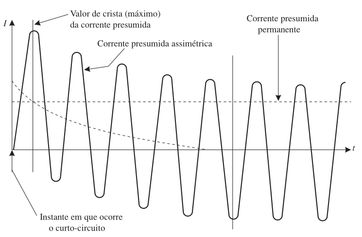
Fig. 5: Corrente presumida de curto-circuito em um ponto de uma instalação.
Tensões e Tempos
Tensão nominal (\(U_e\)): valor de tensão ao qual são referidas as capacidades de interrupção e estabelecimento nominais.
Tensão de isolamento nominal (\(U_i\)): valor de tensão que designa o dispositivo e ao qual são referidos os ensaios dielétricos e distâncias de isolamento.
Tempo de fusão: decorre entre o instante em que a corrente atinge valor suficiente para fundir o elemento e o instante em que se inicia o arco.
Tempo de abertura: intervalo entre a operação de abertura e o instante de separação dos contatos de arco.
Tempo de interrupção: intervalo de tempo que decorre entre o início do tempo de abertura/fusão e o fim do tempo de arco.
Integral de Joule e Ação Limitadora
A integral de Joule (símbolo \(I^2t\)) é a integral do quadrado da corrente em um intervalo de tempo especificado, isto é:
\[ I^2t = \int_{t_0}^{t_1} i^2 dt \; [A^2s] \]
A integral de Joule dá o valor da energia térmica por unidade de resistência (\(1 A^2s = 1 J/\Omega\)) liberada em um circuito.
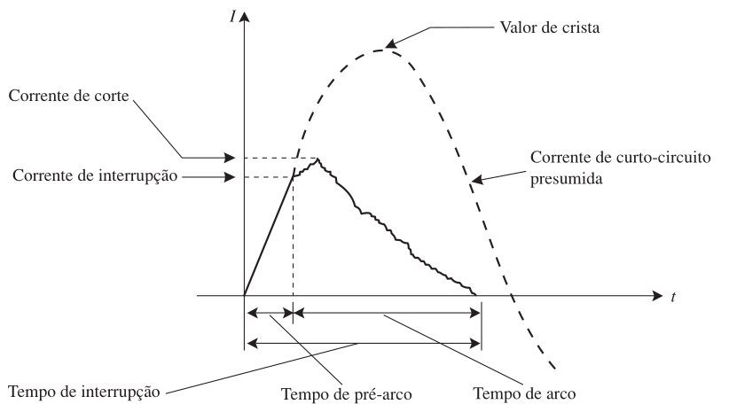
Fig. 6: Ação de um dispositivo limitador de corrente.
Dispositivos fusíveis de baixa tensão
Generalidades
Os dispositivos fusíveis constituem a proteção mais tradicional dos circuitos e dos sistemas elétricos. Sua operação consiste na fusão do elemento fusível (elo) contido no fusível.
Alguns fusíveis possuem um indicador, que permite verificar se o dispositivo fusível operou ou não.
A maioria dos fusíveis contém material granulado extintor em seu interior (em geral, areia de quartzo de granulometria conveniente).
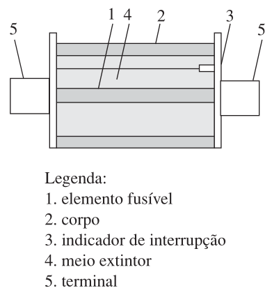
Fig. 7: Componentes típicos de um fusível.
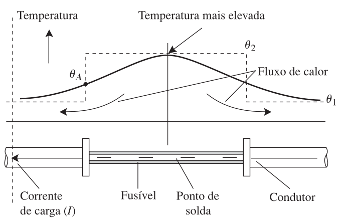
Fig. 8: Temperatura do elemento fusível em regime normal de carga.
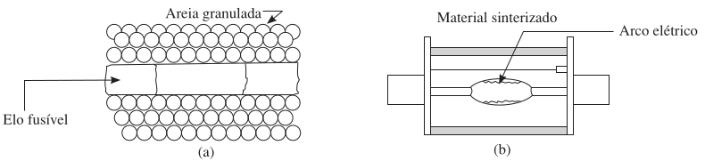
Fig. 9: Atuação de um fusível após a fusão.
Operação do Fusível
A corrente que pode percorrer o fusível permanentemente sem que esse valor-limite seja ultrapassado é definida como a corrente nominal do fusível.
Após a fusão, o elemento fusível está interrompido mecanicamente, porém a corrente não é interrompida, sendo mantida pelo arco elétrico pela fonte e pela indutância do circuito.
A fusão e o arco elétrico provocam a evaporação do material metálico do elo. O vapor metálico sob alta pressão é empurrado contra a areia, na qual grande parte do arco é extinta.
Características e Tipos
Fusível cartucho: o elemento físico é encerrado em um tubo protetor de material isolante.
Fusível rolha: de baixa tensão, no qual um dos contatos é uma peça roscada.
Fusível encapsulado: elemento completamente encerrado em um invólucro capaz de impedir a formação de arco externo.
Os fusíveis são classificados pela faixa de interrupção (a primeira minúscula, “g” ou “a”) e a categoria de utilização (maiúscula, “G” ou “M”).
Fusíveis “g”: atuam em toda a faixa de correntes até sua capacidade nominal.
Fusíveis “a”: atuam em faixa parcial (para correntes compreendidas a partir de um valor prefixado superior ao nominal).
Tipos Comuns (gL/gG, aM, gM)
Nas instalações elétricas de baixa tensão, os tipos mais comuns são: gL, gG, gM e aM.
Os fusíveis gL/gG são de aplicação geral, utilizados na proteção de circuitos contra correntes de sobrecarga e contra correntes de curto-circuito.
Os fusíveis aM são destinados à proteção de circuitos de motores contra correntes de curto-circuito (possuem um limite inferior de atuação superior à corrente nominal).
Os fusíveis gM são destinados à proteção de circuitos de motores contra correntes de curto-circuito, mas são caracterizados por dois valores de corrente (ex: 16M32 A).
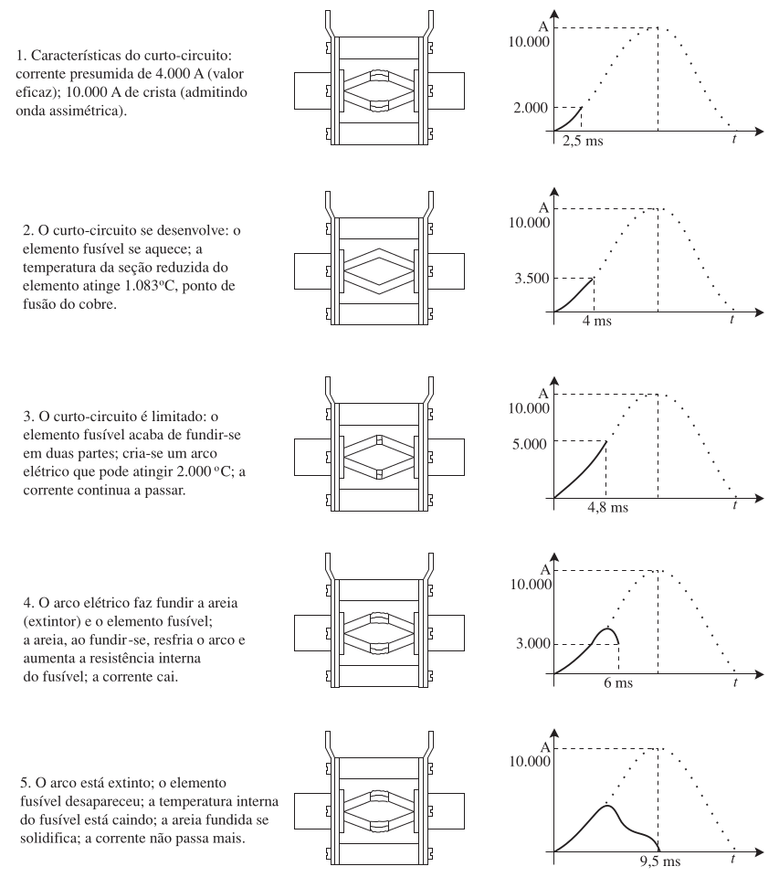
Fig. 10: Ação de fusíveis limitadores de corrente com dois elos em paralelo.
Uso Industrial vs. Doméstico
As normas classificam os dispositivos fusíveis também quanto ao tipo de pessoa indicada para sua utilização.
Uso por pessoas autorizadas (antigo “uso industrial”): fusíveis intencionalmente só acessíveis para reposição por pessoas qualificadas (BA4) ou habilitadas (BA5). Podem ser gL/gG, gM ou aM, com \(I_N\) até 1.250 A e capacidade de interrupção não inferior a 50 kA (660 V CA) ou 25 kA (750 V CC).
Uso por pessoas não qualificadas (antigo “uso doméstico”): fusíveis acessíveis e substituíveis por pessoas comuns. São apenas gL/gG, com \(I_N\) até 100 A e capacidade de interrupção não inferior a 6 kA (até 240 V) ou 20 kA (240 a 500 V).
Uso
Formatos/Classes
\(I_N\) máximo
Capacidade de interrupção
Autorizado (industrial)
Cartucho cilíndrico, tipo faca (NH), parafusado
1.250 A
≥ 50 kA (660 V CA) / 25 kA (750 V CC)
Não qualificado (doméstico)
Cartucho, tipo D (Diazed)
100 A
≥ 6 kA (240 V) / 20 kA (240–500 V)
Zonas Tempo-Corrente
A característica tempo-corrente de um fusível dá o tempo virtual de fusão ou interrupção em função da corrente presumida simétrica. O espaço entre os tempos máximo e mínimo de fusão é a zona tempo-corrente.
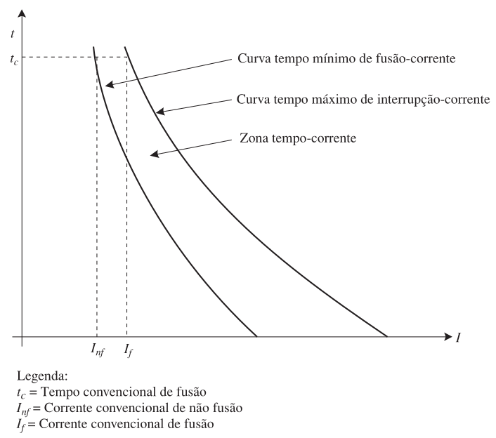
Fig. 11: Zona tempo-corrente de um fusível de uso geral (gG).
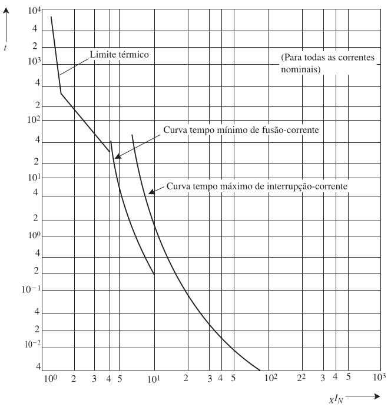
Fig. 12: Zona tempo-corrente de um fusível tipo aM (menor valor a interromper \(4 I_N\))
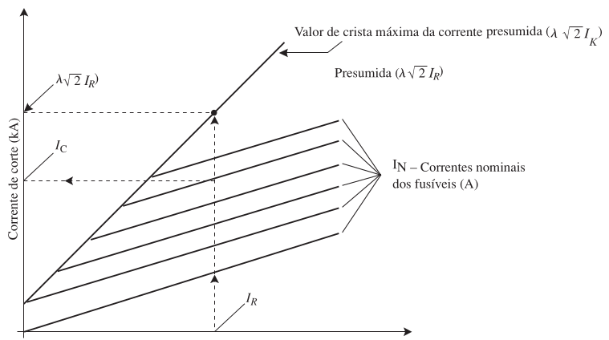
Fig. 13: Característica de corte de um fusível limitador.
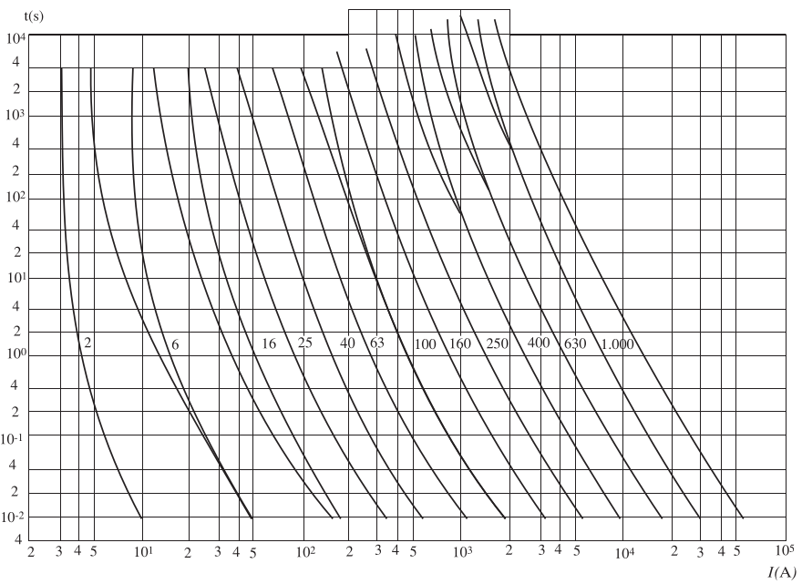
Fig. 14: Zonas tempo-corrente para fusíveis tipo “gG” de 2, 6, 16, 25, 40, 63, 100, 160, 250, 400, 630 e 1.000 A.
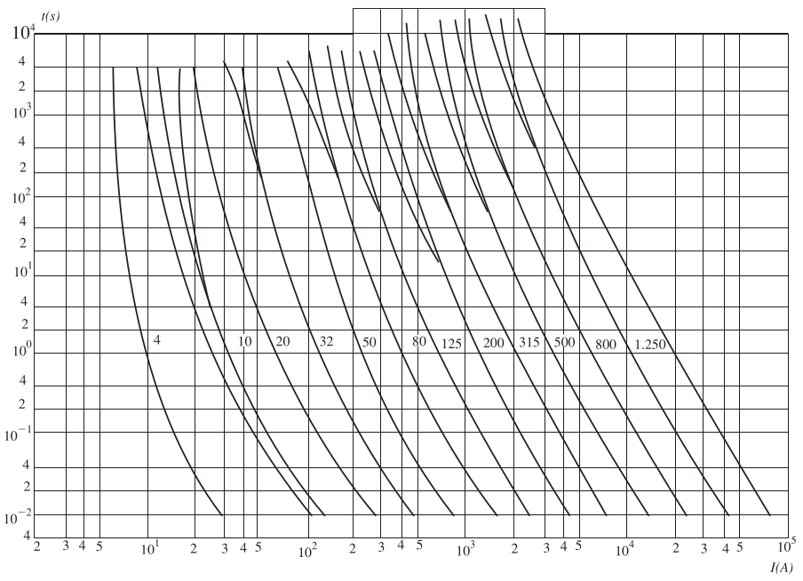
Fig. 15: Zonas tempo-corrente para fusíveis tipo “gG” de 4, 10, 20, 32, 50, 80, 125, 200, 315, 500, 800 e 1.250 A.
Exemplo: Característica de Corte
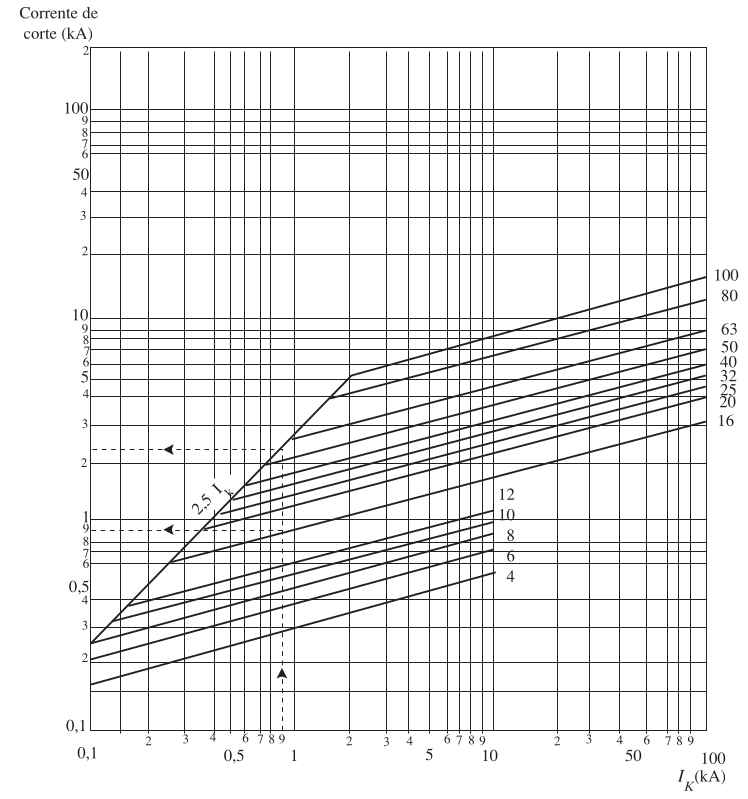
Fig. 16: Característica de corte de um fusível gL (\(\cos \phi = 0,1\)) (Cortesia de Legrand).
A figura mostra a característica de corte de um fusível limitador gL, considerando um fator de potência de curto-circuito de 10% (\(\cos \phi = 0,1\)).
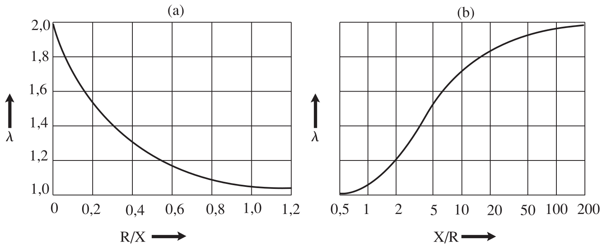
Fig. 17: Fator em função de (a) R/X e de (b) X/R.
Para esse fator de potência, a relação entre o pico assimétrico e o valor eficaz simétrico é dada por: \[ \lambda\sqrt{2} = 1,78 \times \sqrt{2} \cong 2,5 \]
O que significa cada termo?
\(I_k\): é o valor eficaz da corrente presumida simétrica de curto-circuito.
\(\sqrt{2}\): converte o valor eficaz simétrico no seu respectivo valor de crista (pico senoidal).
\(\lambda\) (Fator de Assimetria): durante os primeiros instantes de um curto-circuito, a corrente apresenta uma componente de corrente contínua que desloca a onda, tornando o primeiro pico muito maior (onda assimétrica). O fator \(\lambda\) contabiliza esse agravamento. Para um \(\cos \phi = 0,1\) (circuito bastante indutivo), o impacto é elevado, resultando no fator multiplicador de \(2,5\).
Verificação numérica:
Vamos confirmar o valor de crista apresentado na Figura 16, para uma corrente de curto-circuito presumida simétrica \(I_k = 0,9\) kA:
Código
Ik_kA =0.9# corrente de curto-circuito presumida simétrica (kA)lambda_sqrt2 =2.5# fator para cos(phi) = 0,1 (X/R = 6,6)crista_kA = lambda_sqrt2 * Ik_kAcrista_A = crista_kA *1000println("Valor de crista máximo (sem limitador): ", crista_kA, " kA = ", crista_A, " A")@assert crista_kA ==2.25"Valor não confere com o impresso no livro (2,25 kA)"
Valor de crista máximo (sem limitador): 2.25 kA = 2250.0 A
O gráfico da Figura 16 mostra que, para essa corrente presumida (\(I_k = 900\) A), a corrente de corte lida na curva de um fusível gL de 16 A ainda coincide com o próprio \(I_k\) (\(I_c \approx 0,90\) kA \(= 900\) A) — ou seja, nesse patamar de corrente o fusível ainda não exerce efeito limitador; a limitação só se manifesta para correntes presumidas bem mais elevadas.
Disjuntores de baixa tensão
Funções de um disjuntor
Os disjuntores exercem três funções básicas:
(a) Promovem a proteção elétrica de um circuito (detecção de sobrecorrentes e abertura).
(b) Permitem comandar, por meio da abertura ou fechamento voluntário, sob carga.
(c) Promovem o seccionamento de um circuito, assegurando uma distância de isolamento.
Onde os disjuntores podem NÃO atuar adequadamente: Choques elétricos, faltas de baixa intensidade entre condutores, correntes de falta à terra de pequena intensidade, surtos de tensão e sobreaquecimentos em conexões.
Disparadores de um disjuntor
Um disparador é um dispositivo associado mecanicamente a um disjuntor e que libera os órgãos de retenção dos contatos principais.
Um disparador de sobrecorrente provoca a abertura, com ou sem retardo, quando a corrente excede um valor predeterminado. Pode ser:
Instantâneo
Com retardo (ou tempo) definido
Ajustável
A tempo inverso (opera após um retardo inversamente proporcional à corrente)
Câmara de extinção
A câmara de extinção de um disjuntor é o compartimento que envolve os contatos do circuito principal, capaz de resistir às solicitações térmicas devidas ao arco, projetada especificamente para promover a extinção de arco elétrico.
Tipos de construções de disjuntores
Existem diversos tipos quanto ao meio extintor/construção:
Disjuntor seco: contatos operam no ar sob pressão atmosférica.
Disjuntor a gás, ar comprimido, \(SF_6\), vácuo, ou a óleo (grande e pequeno volume).
Disjuntor a sopro magnético: o arco é soprado por um campo magnético induzido pela própria corrente.
Disjuntor em caixa moldada: disjuntor seco montado em uma caixa de material isolante que suporta e encerra suas partes.
Disjuntor aberto: disjuntor seco que possui todas as partes montadas em uma estrutura aberta, geralmente metálica.
Níveis de proteção
Os disjuntores possuem, em geral, dois níveis de proteção:
Contra sobrecorrentes pequenas e moderadas (correntes de sobrecarga), por meio de disparadores térmicos (chamados apenas “térmicos”).
Contra sobrecorrentes elevadas (curto-circuito), por meio de disparadores eletromagnéticos (chamados apenas “magnéticos”).
(Disjuntores termomagnéticos aliam ambos).
Categorias em relação ao tempo de abertura
Os disjuntores termomagnéticos classificam-se em relação ao tempo de abertura (pré-arco) em três categorias:
Disjuntores lentos: tempos de pré-arco longos (superiores a 60 ms), destinados a intervir em casos extremos (ex: curto no circuito de distribuição principal, a montante dos disjuntores divisionários).
Disjuntores rápidos: tempos da ordem de 2 a 3 ms, extinguindo o arco à primeira passagem da tensão pelo zero (a corrente não atinge o pico máximo teórico).
Disjuntores limitadores de corrente: ultrarrápidos, tempos de 0,6 a 0,9 ms, limitando fortemente a corrente de curto-circuito. O arco extingue-se no primeiro semiciclo (tempo de interrupção inferior a 10 ms).
Nota: Os pequenos disjuntores em caixa moldada são hoje decisivos na proteção da grande maioria dos circuitos terminais, evitando incêndios de origem elétrica que iniciam nesses pontos.
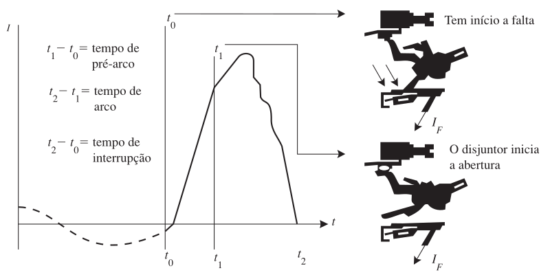
Fig. 18: O tempo de abertura (tempo e pré-arco) nos disjuntores.
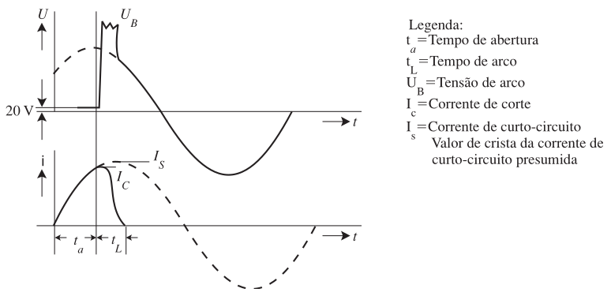
Fig. 19: Oscilograma típico da atuação de um disjuntor limitador de corrente.
Disparador Eletromagnético
Sua armadura é tensionada por uma mola; acima de um valor definido (corrente de ajuste), é vencida a inércia da armadura, que é atraída pelo núcleo magnético, abrindo os contatos principais.
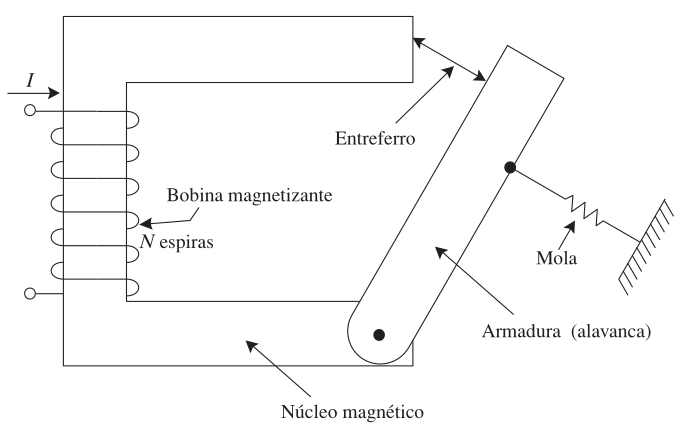
Fig. 20: Princípio de funcionamento de um disparador eletromagnético.
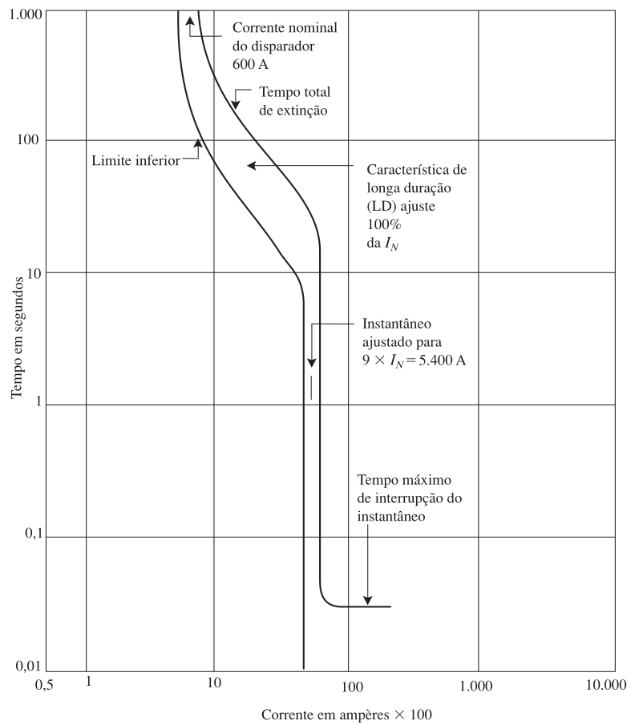
Fig. 21: aracterística tempo-corrente de um disparador eletromagnético com características de longa duração e instantânea.
Exemplo: Ajustes de um Disparador (LD + Instantâneo)
Disparador eletromagnético combinando as características de longa duração (LD) e instantânea, usado em um disjuntor aberto (Figura 20), com corrente nominal \(I_N = 600\) A:
Característica LD: faixa de ajuste de 80% a 160% de \(I_N\); ajuste fixado em 100% \(I_N\).
Característica instantânea: faixa de ajuste de 6 a 12 vezes \(I_N\); ajuste fixado em 9 \(I_N\).
Código
IN =600.0# corrente nominal do disparador (A)# Característica de longa duração (LD): ajuste de 80% a 160% de INLD_min =0.8* INLD_max =1.6* INLD_ajuste =1.0* IN# Característica instantânea: ajuste de 6 a 12 vezes INinst_min =6* INinst_max =12* INinst_ajuste =9* INprintln("LD: faixa de ", LD_min, " a ", LD_max, " A, ajuste = ", LD_ajuste, " A")println("Instantâneo: faixa de ", inst_min, " a ", inst_max, " A, ajuste = ", inst_ajuste, " A")@assert LD_ajuste ==600.0"Ajuste de LD não confere com o livro (600 A)"@assert inst_ajuste ==5400.0"Ajuste instantâneo não confere com o livro (5.400 A)"
LD: faixa de 480.0 a 960.0 A, ajuste = 600.0 A
Instantâneo: faixa de 3600.0 a 7200.0 A, ajuste = 5400.0 A
Os valores calculados conferem com os impressos no livro: ajuste da característica LD em \(I_N = 600\) A e ajuste do instantâneo em \(9 I_N = 5.400\) A.
Disparador Térmico
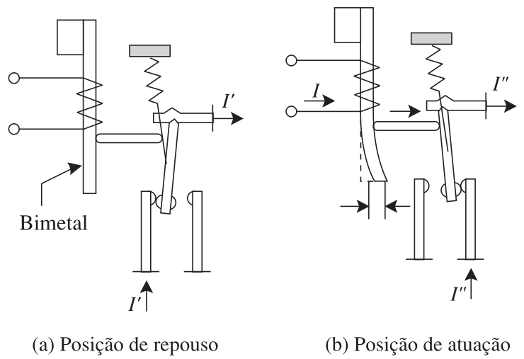
Fig. 22: Princípio de funcionamento de um disparador térmico bimetálico.
Os disparadores térmicos operam baseados no princípio dos pares bimetálicos, isto é, nas diferentes dilatações que apresentam os metais quando submetidos a variação de temperatura.
Para evitar a atuação indevida decorrente apenas do aumento da temperatura ambiente, é colocada uma lâmina bimetálica de compensação.
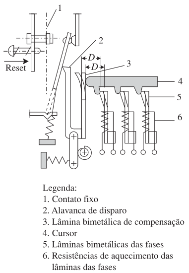
Fig. 23: Princípio de funcionamento de um disparador térmico com compensação de temperatura.
Disparador Eletrônico (Microprocessado)
Alguns disjuntores podem usar componentes eletrônicos (dispositivos semicondutores microprocessados) para monitorar os níveis de corrente, em vez de disparadores magnéticos e térmicos.
Esses elementos são muito mais precisos que os convencionais.
Desligam o circuito mais rapidamente.
São indicados para aplicações em que se requer ajustes de disparo e seletividade muito precisos.
Regulamentos e Normas Técnicas de Disjuntores
No Brasil, o documento técnico aplicável a um disjuntor de baixa tensão depende da sua aplicação:
Uso industrial:NBR IEC 60947-2 — Dispositivos de manobra e comando de baixa tensão – Parte 2: Disjuntores. É a única norma aplicável a esse segmento, com correntes nominais de 16 A a 6.300 A.
Uso residencial:RTQ da Portaria Inmetro 243/2006 (compulsório para comercialização) e/ou NBR NM 60898 — Disjuntores para proteção de sobrecorrentes para instalações domésticas e similares (correntes nominais de 6 A a 125 A).
A diferença não é apenas de faixa de corrente: a NBR IEC 60947-2 é a referência para disjuntores de quadros de distribuição industriais, subestações e proteção de motores, enquanto o RTQ/NBR NM 60898 cobrem circuitos terminais residenciais e similares — cada norma define também sua própria temperatura de calibração (ver Tabela 6.3).
Características Nominais de Disjuntores
Independentemente da norma aplicável (ex: NBR NM 60898, IEC 60947-2), destacam-se os seguintes valores:
Tensão nominal: valor de tensão ao qual são referidas certas características de funcionamento (como capacidade de interrupção).
Corrente nominal (\(I_N\)): maior valor de corrente que pode circular continuamente pelo disjuntor sem provocar seu desligamento automático nem danificar seus componentes. (Ex: 10 A, 16 A, 32 A, etc.)
Corrente de operação: nos disparadores ajustáveis, a corrente de operação pode variar em relação à nominal (ex: ajuste de \(0,7 I_N\) a \(1,0 I_N\)).
Correntes convencionais de atuação e de não atuação: valores de tabela que definem o disparo térmico obrigatório dentro de um tempo convencional (ex: 1 hora ou 2 horas).
Exemplo: Correntes Convencionais
Seja um disjuntor em caixa moldada com corrente nominal \(I_N = 35 \text{ A}\).
Para essa corrente as relações são:
Corrente de não atuação (\(I_{na}\)) = \(1,05 \times I_N\)
Corrente de atuação (\(I_a\)) = \(1,35 \times I_N\)
Tempo convencional = \(1 \text{ hora}\)
O que isso significa?
\(I_{na} = 1,05 \times 35 \text{ A} = \mathbf{36,75 \text{ A}}\). O disjuntor deve conduzir \(36,75 \text{ A}\) por 1 hora contínua sem atuar.
\(I_a = 1,35 \times 35 \text{ A} = \mathbf{47,25 \text{ A}}\). Circulando uma corrente de \(47,25 \text{ A}\), a atuação deve dar-se, no máximo, em 1 hora.
Tab. 1: Correntes convencionais de atuação, de não atuação e tempos convencionais para disjuntores termomagnéticos, de acordo com o RTQ, a NBR NM 60898 e a NBR IEC 60947-2 (uso industrial).
Documento
\(I_n\) (A)
\(\Theta_a\) (°C)
\(I_{na}\)
\(I_a\)
\(t_c\) (h)
RTQ (Inmetro 243)
\(\le 50\)
\(25\)
\(1,05 I_n\)
\(1,35 I_n\)
\(1\)
RTQ (Inmetro 243)
\(> 50\)
\(25\)
\(1,05 I_n\)
\(1,35 I_n\)
\(2\)
NBR NM 60898
\(\le 63\)
\(30\)
\(1,13 I_n\)
\(1,45 I_n\)
\(1\)
NBR NM 60898
\(> 63\)
\(30\)
\(1,13 I_n\)
\(1,45 I_n\)
\(2\)
NBR IEC 60947-2
\(\le 63\)
\(30\)
\(1,05 I_n\)
\(1,30 I_n\)
\(1\)
NBR IEC 60947-2
\(> 63\)
\(30\)
\(1,05 I_n\)
\(1,30 I_n\)
\(2\)
Capacidade de interrupção e Faixas de atuação
Capacidade de interrupção (ruptura): é a maior corrente de curto-circuito que o disjuntor consegue interromper sem se danificar. Os valores para baixa tensão variam, geralmente, na faixa de 1,5 kA a 200 kA, dependendo do modelo de cada fabricante.
Segundo a NBR NM 60898, as três faixas são:
Faixa B: atuação instantânea acima de \(3 I_N\) até \(5 I_N\). (Linhas longas/baixa corrente de curto-circuito)
Faixa C: atuação instantânea acima de \(5 I_N\) até \(10 I_N\). (Instalações elétricas em geral)
Faixa D: atuação instantânea acima de \(10 I_N\) até \(20 I_N\). (Equipamentos com elevadas correntes de partida)
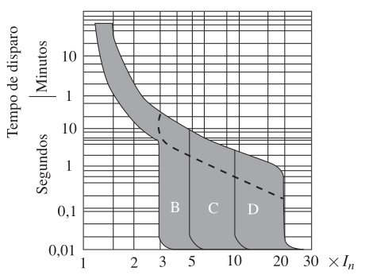
Fig. 24: Faixas de atuação instantâneas de disjuntores conforme a NBR NM 60898.
Disjuntores em Caixa Moldada
Os disjuntores em caixa moldada são o tipo mais comum de disjuntor de baixa tensão.
Em sua grande maioria, são termomagnéticos (equipados com disparadores térmicos de longa duração e eletromagnéticos instantâneos).
Possuem correntes nominais variando de 5 a 3.000 A.
São utilizados na proteção de circuitos de distribuição, de circuitos terminais e de equipamentos (geralmente montados em quadros de distribuição).
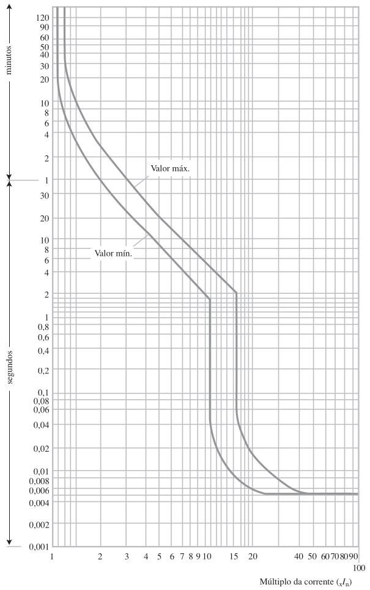
Fig. 25: Curva característica de um disjuntor em caixa moldada, conforme a NBR IEC 60947-2.
Pequenos Disjuntores (Minidisjuntores)
Dentre os disjuntores em caixa moldada, destacam-se os chamados pequenos disjuntores (ou “minidisjuntores”).
Possuem correntes nominais na faixa de 5 a 125 A.
São utilizados, principalmente, na proteção de circuitos terminais, na proteção/comando de certos equipamentos (ex: condicionadores de ar) e em circuitos de distribuição divisionários.
Dependendo do documento técnico, podem ser calibrados a 20 °C, 25 °C ou 40 °C e instalados em quadros de distribuição.
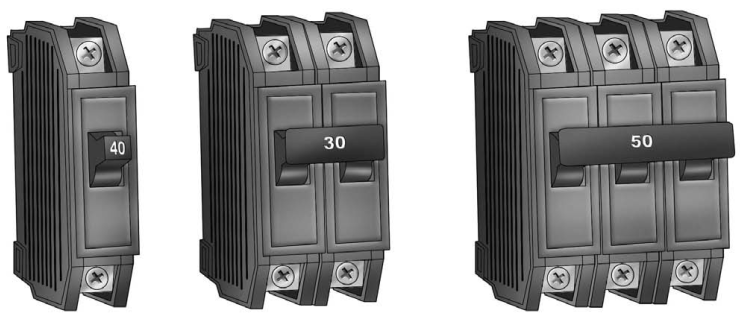
Fig. 26: Exemplos de disjuntores conforme RTQ da Portaria do Inmetro 243.
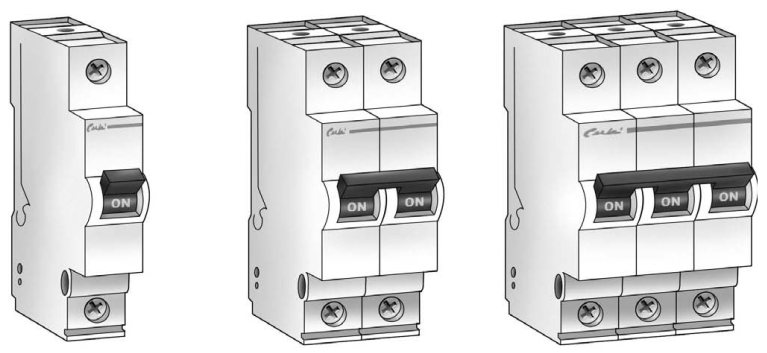
Fig. 27: Disjuntores conforme NBR NM 60898.
Fator de Correção Térmica
Como os pequenos disjuntores em caixa moldada normalmente não são compensados termicamente, sua corrente nominal (a de operação do disparador térmico) deve ser corrigida quando a temperatura do quadro difere da temperatura de calibração do fabricante.
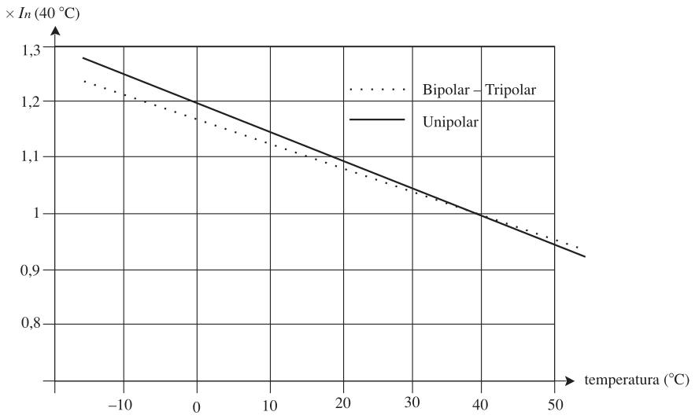
Fig. 28: Fator de correção típico aplicável aos disjuntores termomagnéticos. Tibra e Supertibra (Cortesia da Bticino).
Fator de Correção Térmica
Para temperaturas acima da calibração, o fator é menor que 1 — a corrente admissível deve ser reduzida.
Para temperaturas abaixo da calibração, o fator pode ser maior que 1 — a corrente admissível aumenta.
Na prática: para um disjuntor de \(I_N\) dado, instalado em um quadro com temperatura ambiente \(\theta\) diferente da calibração, a corrente máxima realmente suportável é \(I_N \times f(\theta)\), lida diretamente no gráfico do fabricante.
Dispositivos a Corrente Diferencial-Residual
Generalidades (DR)
Os dispositivos DR constituem-se no meio mais eficaz de proteção das pessoas (e dos animais domésticos) contra choques elétricos. São o único meio “ativo” de proteção contra contatos diretos.
O DR detecta a soma fasorial das correntes que percorrem os condutores vivos de um circuito. A atuação ocorre quando a corrente diferencial-residual (\(I_{DR}\)) ultrapassa um valor preestabelecido.
Sem fuga:\(\sum \vec{I} = 0 \implies I_{DR} = 0\)
Com fuga:\(\sum \vec{I} \neq 0 \implies I_{DR} > 0\)
Principais Funções de um DR
As três principais funções que os componentes de um dispositivo DR devem desempenhar são:
(a) Detecção: consiste em o dispositivo sentir a presença de uma corrente residual (por exemplo, por um transformador toroidal).
(b) Avaliação: é a função que dá ao DR a possibilidade de operar quando a corrente detectada excede certo valor de referência especificado.
(c) Interrupção: consiste em mover automaticamente os contatos principais do DR da posição fechado para aberto, interrompendo o fluxo de corrente.
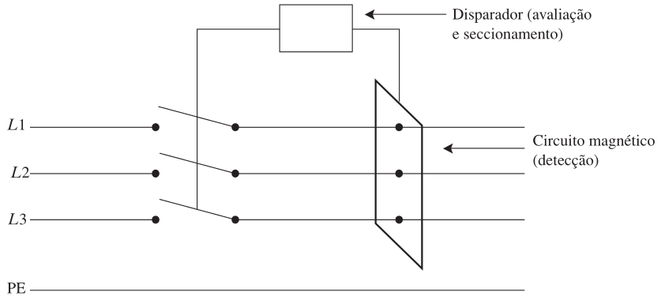
Fig. 29: Partes essenciais de um dispositivo DR.
Princípio de Atuação do DR
Quando o fluxo resultante no núcleo do transformador for diferente de zero, isto é, quando existir uma corrente diferencial-residual, será gerada uma força eletromotriz na bobina secundária e uma corrente percorrerá a bobina do núcleo do relé polarizado.
Quando essa corrente for igual ou superior à corrente de atuação do dispositivo, o fluxo criado no relé polarizado provocará sua desmagnetização.
A ação da mola desloca o braço que libera a trava, abrindo os contatos principais do dispositivo e desenergizando o circuito.
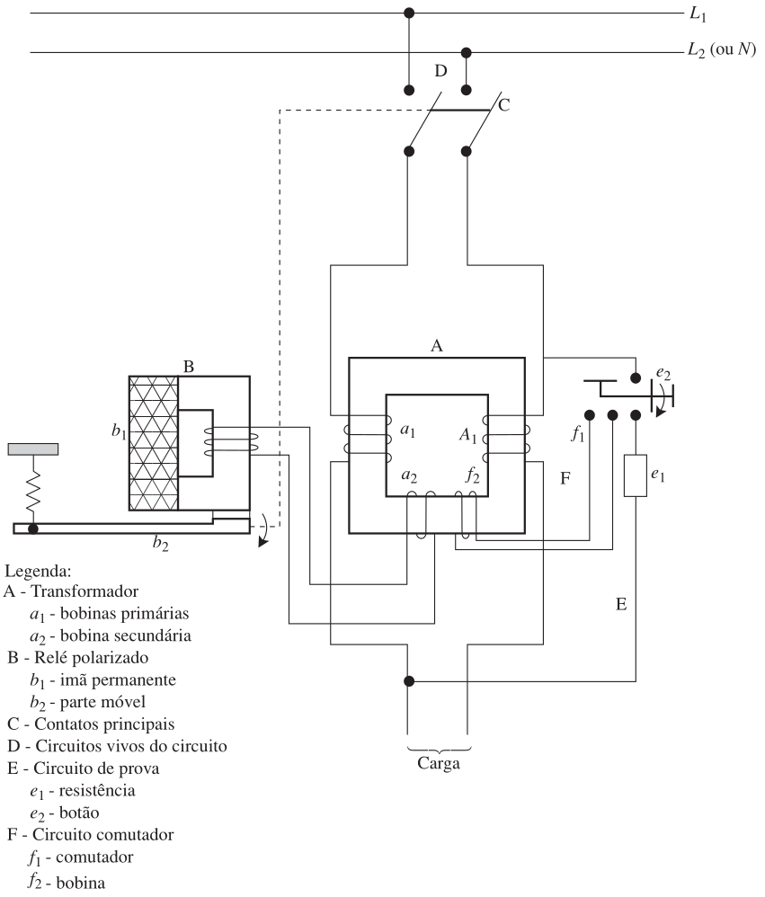
Fig. 30: Dispositivo DR Bipolar.
Tipos de Corrente Detectados pelo DR
Certos equipamentos (retificadores, tiristores, inversores de frequência) podem dar origem a componentes contínuas em circuitos CA. Por isso, os DRs são classificados quanto ao tipo de corrente que conseguem detectar:
Tipo AC: sensível apenas a correntes alternadas senoidais.
Tipo A: sensível a correntes alternadas senoidais e a correntes contínuas pulsantes.
Tipo B: sensível a correntes alternadas senoidais, correntes contínuas pulsantes e correntes contínuas puras (lisas).
Em instalações industriais com motores acionados por inversores de frequência (drives) ou outras cargas com retificadores, a corrente de fuga pode conter componentes contínuas que um DR tipo AC comum não detecta — sendo obrigatório o uso de DR tipo A ou B. Em instalações mais usuais, como as residenciais, o DR tipo AC normalmente é suficiente.
Tipos Construtivos de DR
Interruptores/disjuntores DR para painéis: uso em quadros de distribuição.
Blocos DR acopláveis a disjuntores: componentes avulsos (relés diferenciais e transformadores de corrente) associados ao disparador de disjuntores ou contatores já existentes — muito usados em retrofit de instalações industriais, sem substituir o disjuntor original.
Tomadas e interruptores DR incorporados: para uso em caixas de ligação (paredes/condulete) ou incorporados a cordões de ligação de equipamentos móveis.
DRs sem fonte auxiliar: detecção, avaliação e interrupção não dependem de uma fonte externa (ex: dispositivos eletromecânicos).
DRs com fonte auxiliar: dependem da própria rede de alimentação normal da instalação (ex: DRs eletrônicos).
Proteção contra Contatos Diretos (DR)
A proteção adicional contra contatos diretos, proporcionada pelo DR de alta sensibilidade (\(I_N \le 30\) mA), é obrigatória, segundo a NBR 5410, nos seguintes casos:
Circuitos que sirvam a pontos de utilização situados em locais contendo banheira ou chuveiro.
Circuitos que alimentem tomadas de corrente em áreas externas à edificação.
Em locais de habitação: circuitos de cozinhas, lavanderias, áreas de serviço e garagens.
Em edificações não residenciais (inclusive instalações industriais): circuitos de tomadas em cozinhas, lavanderias, áreas de serviço, garagens e oficinas, e, no geral, em áreas internas molhadas em uso normal ou sujeitas a lavagens.
Um DR de 30 mA oferece proteção eficaz contra fibrilação ventricular na faixa de 30 a 350 mA; em situações críticas (locais úmidos ou molhados), recomendam-se valores ainda menores, como 10 mA ou 6 mA.
Seccionamento não automático e comando
Ação não-automática (manual)
A “ação não-automática” (ou “manual”) deve ser entendida como uma ação voluntária, efetuada por uma pessoa, ao contrário da “automática”, que resulta do comando de um dispositivo (geralmente um relé) sensível a determinada grandeza elétrica.
Observe que o seccionamento e o comando não automáticos não excluem a intervenção de um dispositivo entre a pessoa e o dispositivo de seccionamento propriamente dito, como é o caso do “comando a distância”.
Tipos de Seccionamento e Comando
Seccionamento para manutenção mecânica: previsto para equipamentos que envolvem riscos (máquinas, elevadores, escadas rolantes). Exige medidas contra religamento inadvertido (cadeados, avisos).
Seccionamento de emergência: previsto para suprimir rapidamente um perigo inesperado (bombas de inflamáveis, cozinhas industriais, ventiladores).
Comando funcional: aplicado a partes que necessitem de comando independente (ex: interruptores de luz). Não precisam necessariamente atuar sobre todos os condutores vivos.
Características Normativas (Tabela 6.5)
Resumo das principais características exigidas pela NBR 5410 para os dispositivos de seccionamento e comando:
Tab. 2: Características dos dispositivos de seccionamento e comando segundo a NBR 5410 (resumo).
Função
Características principais (resumo)
Seccionamento
Seccionar todos os condutores vivos; marcações “desligado/ligado” claras; não usar dispositivo a semicondutor; impedir restabelecimento inadvertido.
Seccionamento p/ manutenção mecânica
Operação manual; interromper a corrente de plena carga (inclusive rotor travado); impedir religamento inadvertido durante a manutenção.
Seccionamento de emergência
Interrupção por uma única operação; comando identificado, preferencialmente vermelho sobre fundo amarelo; acessível a partir do local de risco.
Comando funcional
Pode não seccionar todos os pólos (ex: dispositivos a semicondutor); não podem ser usados fusíveis, barras ou seccionadores.
Referências
COTRIM, Ademaro A. M. B. Instalações Elétricas. 5ª Edição. São Paulo: Pearson Prentice Hall, 2009.
Exercícios
Exercício 1
Quais são os três tipos de circuitos internos dos dispositivos de manobra e de proteção?
O circuito principal
O circuito de comando
O circuito auxiliar
Exercício 2
Qual é a diferença dos conceitos ciclo de operação e seqüência de operações?
Ciclo de operação é a sucessão de operações de uma posição à outra e a volta à posição inicial, passando por todas as outras. A seqüência de operações é a sucessão de operações especificadas em determinados intervalos de tempo.
Exercício 3
O que é um disjuntor?
É um dispositivo de manobra mecânico e de proteção, capaz de estabelecer, conduzir e interromper correntes em condições normais do circuito, bem como estabelecer, conduzir por tempo especificado e interromper correntes em condições anormais (como as de curto-circuito).
Exercício 4
O que é um dispositivo fusível?
É um dispositivo de proteção que, pela fusão de uma parte especialmente projetada (elo), abre o circuito no qual se acha inserido e interrompe a corrente, quando esta excede um valor de referência durante um tempo especificado.
Exercício 5
Como é feita a indicação visível da atuação de uma chave fusível de distribuição de energia elétrica?
Após a fusão do elo, o porta-fusível é levado, pela ação da gravidade, a uma posição tal que assegura a distância de isolamento especificada (pendurando-se), dando uma indicação visível da sua atuação.
Exercício 6
A quais elementos são em geral associados os relés provocando a abertura destes em condições anormais?
Os relés são associados eletricamente aos disjuntores ou contatores, provocando a sua abertura quando detectam alguma condição anormal (sobrecorrente, subtensão, desequilíbrios, etc.).
Exercício 7
Quais são as quatro funções básicas exercidas pelos dispositivos de manobra e de proteção?
A proteção contra choques elétricos (contatos indiretos).
A proteção contra sobrecorrentes.
O comando funcional.
O seccionamento não automático.
Exercício 8
Quais são as características básicas dos fusíveis?
São de operação simples e geralmente de baixo custo.
Não possuem capacidade de efetuar manobras.
São unipolares.
Possuem característica tempo-corrente não ajustável.
Não são de operação repetitiva (devem ser trocados).
São rápidos limitadores de corrente em altas sobrecorrentes.
Exercício 9
Quais são as características básicas dos disjuntores?
Oferecem larga margem de escolha de correntes nominais com ajustes; operação é repetitiva; atuam multipolarmente; permitem, em alguns casos, o comando a distância; e são mais lentos que os fusíveis limitadores em curtos-circuitos muito elevados, mas eficientes para correntes moderadas.
Exercício 10
Qual é a diferença entre interruptores e disjuntores DR?
Interruptores DR destinam-se unicamente à proteção contra choques elétricos (têm baixa capacidade de interrupção). Disjuntores DR são dispositivos mais completos, com alta capacidade de interrupção, que garantem também a proteção contra sobrecorrentes (sobrecarga e curto-circuito).